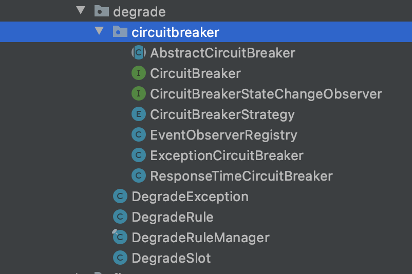

公司原先在微服务限流降级等使用的是开源的组件Hystrix，并且都是组内自主使用，或许是toB业务的原因，一直没有重视。上半年中间件组开始推自己的高可用中间件，简单看了一下是基于Sentinel的本地化封装（做这个的大哥也是阿里来的），借此机会，学习一下Sentinel的源码。
本文包括一些高可用服务的概念讲解、Sentinel整体流程及熔断降级部分的源码解析。
第一次写源码解析，写的不好多多包涵。个人理解，写的不对多多指正。
reference：https://github.com/alibaba/Sentinel
概念讲解 在微服务架构中，远程调用用来替代本地调用，而远程调用是不可控的，我们的服务需要应对上下游的不可控流量。因此我们需要通过对上游流量控制、对下游流量熔断降级隔离等，来保障服务等高可用性（Availability）。正如Sentinel的官方文档中所说，Sentinel就是用来做这些事的。
As distributed systems are becoming increasingly popular, the reliability between services is becoming more important than ever before. Sentinel is a powerful flow control component that takes “flow” as the breakthrough point and covers multiple fields including flow control, concurrency limiting, circuit breaking, and adaptive system protection to guarantee the reliability of microservices.
下面理解一下这些概念：
限流：当某个消费者（consumer）流量飙升时，会占用生产者（provider）的大部分资源导致其他可能更重要的消费者失败，甚至拖垮整个服务。因此我们需要对流量进行控制，如根据消费者的重要程度进行限流、直接限流、排队等。
降级：指对弱依赖的下游provider，当其不可用时用某种方式（如使用固定值）替换provider的response，否则弱依赖的下游服务不可用也会导致整个脸露的不可用。
熔断：熔断其实一般总是与降级一起讲的。目的是为了防止consumer不断地尝试可能超时和失败的服务。可以理解为一段时间内的直接降级。例如Sentinel中触发一次降级后，一段时间内都不再请求下游服务，而是直接降级处理。这个过程就是熔断。
隔离：与降级对应，隔离是处理强以来的。强依赖是主流程必须的，无法降级，但是当强依赖处理过慢时，会拖住你掉用的线程池，导致应用中其他业务也受影响。所以我们可以对需要的强依赖设置隔离策略（如最大线程数设置），来保护其他的代码。
源码解析 Sentinel的repo其实有很多module
sentinel-core
sentinel-adapter
sentinel-benchmark
sentinel-cluster
sentinel-dashboard
sentinel-logging
sentinel-extension
从命名也能看出来是做什么的，由于时间有限，我们只看核心部分，也就是sentinel-core部分的代码。
翻看QuickStart，最简单的接入方式是这样的
1 2 3 4 5 6 7 8 9 10 11 12 13 14 15 Entry entry = null ; try { entry = SphU.entry("HelloWorld" ); System.out.println("hello world" ); } catch (BlockException e) { } finally { if (entry != null ) { entry.exit(); } }
Sentinel用try-catch-finally的方式包围需要被保护的代码，Entry这个类基本就表示对资源的一次操作（这里插一句，Sentinel保护的是资源，资源可以表示远程调用、本地调用、数据库请求等等，我们就理解为某个方法即可）。在这个例子中，`我们保护了 System.out.println(“hello world”); 这一段代码，如果触发了流量控制规则，则会抛出BlockException，我们可以捕获这个异常，做对应的的处理，exit方法中则会进行流量数据的统计。那么关键入口就是SphU.entry()。点进函数最终执行的是CtSph的entryWithPriority方法，返回的类是CtEntry。这边Ct应该是current的意思，表示同步的资源，与异步对应。
解析下这个方法，中文是我补充的。
1 2 3 4 5 6 7 8 9 10 11 12 13 14 15 16 17 18 19 20 21 22 23 24 25 26 27 28 29 30 31 32 33 34 35 36 37 38 39 40 41 42 43 private Entry entryWithPriority (ResourceWrapper resourceWrapper, int count, boolean prioritized, Object... args) throws BlockException { Context context = ContextUtil.getContext(); if (context instanceof NullContext) { return new CtEntry(resourceWrapper, null , context); } if (context == null ) { context = InternalContextUtil.internalEnter(Constants.CONTEXT_DEFAULT_NAME); } if (!Constants.ON) { return new CtEntry(resourceWrapper, null , context); } ProcessorSlot<Object> chain = lookProcessChain(resourceWrapper); if (chain == null ) { return new CtEntry(resourceWrapper, null , context); } Entry e = new CtEntry(resourceWrapper, chain, context); try { chain.entry(context, resourceWrapper, null , count, prioritized, args); } catch (BlockException e1) { e.exit(count, args); throw e1; } catch (Throwable e1) { RecordLog.info("Sentinel unexpected exception" , e1); } return e; }
三个重点，一是会去获取上下文Context，context以threadlocal形式存在，因此是跟着线程走的。context中会有name（标识）、origin（调用方）、异步标志等，在Entry初始化中会用到。
二是会去获取该资源对应的责任链。这边说明下Sentinel使用了责任链设计模式。每种规则，比如流控、降级等都是一个责任链中的节点（slot），分别对应不同的类。责任链模式的好处是只需要将请求发到责任链上，不需要关心请求传递的细节。
典型实现就是每个节点都持有下一个节点的引用，每次执行完自己的责任，再去执行下一个节点的责任。以Sentinel中实现为例，其持有一个next变量，引用下一个责任slot：
1 2 3 4 5 6 7 8 9 10 11 12 13 14 15 16 17 18 19 public abstract class AbstractLinkedProcessorSlot <T > implements ProcessorSlot <T > private AbstractLinkedProcessorSlot<?> next = null ; @Override public void fireEntry (Context context, ResourceWrapper resourceWrapper, Object obj, int count, boolean prioritized, Object... args) throws Throwable { if (next != null ) { next.transformEntry(context, resourceWrapper, obj, count, prioritized, args); } } @SuppressWarnings("unchecked") void transformEntry (Context context, ResourceWrapper resourceWrapper, Object o, int count, boolean prioritized, Object... args) throws Throwable { T t = (T)o; entry(context, resourceWrapper, t, count, prioritized, args); } }
获取责任链的方法lookProcessChain
1 2 3 4 5 6 7 8 9 10 11 12 13 14 15 16 17 18 19 20 21 22 ProcessorSlot<Object> lookProcessChain (ResourceWrapper resourceWrapper) { ProcessorSlotChain chain = chainMap.get(resourceWrapper); if (chain == null ) { synchronized (LOCK) { chain = chainMap.get(resourceWrapper); if (chain == null ) { if (chainMap.size() >= Constants.MAX_SLOT_CHAIN_SIZE) { return null ; } chain = SlotChainProvider.newSlotChain(); Map<ResourceWrapper, ProcessorSlotChain> newMap = new HashMap<ResourceWrapper, ProcessorSlotChain>( chainMap.size() + 1 ); newMap.putAll(chainMap); newMap.put(resourceWrapper, chain); chainMap = newMap; } } } return chain; }
这里用了一个双重检查锁获取chainMap中的value。如果没有的话，会调用SlotChainProvider.newSlotChain()构造。
1 2 3 4 5 6 7 8 9 10 11 12 13 14 15 16 17 18 public static ProcessorSlotChain newSlotChain () if (slotChainBuilder != null ) { return slotChainBuilder.build(); } slotChainBuilder = SpiLoader.of(SlotChainBuilder.class).loadFirstInstanceOrDefault(); if (slotChainBuilder == null ) { RecordLog.warn("[SlotChainProvider] Wrong state when resolving slot chain builder, using default" ); slotChainBuilder = new DefaultSlotChainBuilder(); } else { RecordLog.info("[SlotChainProvider] Global slot chain builder resolved: {}" , slotChainBuilder.getClass().getCanonicalName()); } return slotChainBuilder.build(); }
使用了SPI机制，关于SPI机制这里不再赘述，感觉可以单独写一篇了。Sentinel默认的META-INF/services文件夹中，注册了DefaultSlotChainBuilder，以及八种责任链节点，最终lookProcessChain的结果就包括这八种：
com.alibaba.csp.sentinel.slots.nodeselector.NodeSelectorSlot
com.alibaba.csp.sentinel.slots.clusterbuilder.ClusterBuilderSlot
com.alibaba.csp.sentinel.slots.logger.LogSlot
com.alibaba.csp.sentinel.slots.statistic.StatisticSlot
com.alibaba.csp.sentinel.slots.block.authority.AuthoritySlot
com.alibaba.csp.sentinel.slots.system.SystemSlot
com.alibaba.csp.sentinel.slots.block.flow.FlowSlot
com.alibaba.csp.sentinel.slots.block.degrade.DegradeSlot
最后就是执行责任链了，lookProcessChain返回的类型是DefaultProcessorSlotChain，其entry方法：
1 2 3 public void entry (Context context, ResourceWrapper resourceWrapper, Object t, int count, boolean prioritized, Object... args) throws Throwable first.transformEntry(context, resourceWrapper, t, count, prioritized, args); }
就是从第一个节点开始执行责任。这个过程中就会进行规则的校验，比如降级的节点进行降级规则的校验。如果触发规则，则会抛出异常。
至此，Sentinel的核心流程算是讲完了，下面讲讲降级的节点DegradeSlot以及降级的流程。
熔断降级 上面说了，每一种规则都是责任链中的一个节点，对应不同的实现类，熔断降级的类就是DegradeSlot，位于com.alibaba.csp.sentinel.slots.block.degrade包下。目录结构如下：

除了DegradeSlot，还有
CircuitBreaker：断路器，并有异常数断路器ExceptionCircuitBreaker与RT断路器ResponseTimeCircuitBreaker
DegradeException：BlockException的子类，降级抛出的是这个异常类
DegradeRule：降级规则
DegradeSlot的entry方法首先执行performChecking方法，核心逻辑都在这里。
1 2 3 4 5 6 7 8 9 10 11 12 13 14 15 16 17 18 19 @Override public void entry (Context context, ResourceWrapper resourceWrapper, DefaultNode node, int count, boolean prioritized, Object... args) throws Throwable performChecking(context, resourceWrapper); fireEntry(context, resourceWrapper, node, count, prioritized, args); } void performChecking (Context context, ResourceWrapper r) throws BlockException List<CircuitBreaker> circuitBreakers = DegradeRuleManager.getCircuitBreakers(r.getName()); if (circuitBreakers == null || circuitBreakers.isEmpty()) { return ; } for (CircuitBreaker cb : circuitBreakers) { if (!cb.tryPass(context)) { throw new DegradeException(cb.getRule().getLimitApp(), cb.getRule()); } } }
第一步是根据资源标识获取断路器list。DegradeRuleManager.getCircuitBreakers是直接从其内部一个map get资源标识映射的断路器的。而这个map的初始化在DegradeRuleManager.RulePropertyListener::reloadFrom方法中
1 2 3 4 5 6 7 8 9 10 11 12 13 14 15 16 17 private synchronized void reloadFrom (List<DegradeRule> list) Map<String, List<CircuitBreaker>> cbs = buildCircuitBreakers(list); Map<String, Set<DegradeRule>> rm = new HashMap<>(cbs.size()); for (Map.Entry<String, List<CircuitBreaker>> e : cbs.entrySet()) { assert e.getValue() != null && !e.getValue().isEmpty(); Set<DegradeRule> rules = new HashSet<>(e.getValue().size()); for (CircuitBreaker cb : e.getValue()) { rules.add(cb.getRule()); } rm.put(e.getKey(), rules); } DegradeRuleManager.circuitBreakers = cbs; DegradeRuleManager.ruleMap = rm; }
DegradeRule是从配置中取的（或者手动构造）不再赘述，这个方法读取DegradeRule列表，并将其转化为CircuitBreaker。转换的方法比较简单，见DegradeRuleManager::newCircuitBreakerFrom。
然后实际上就是遍历断路器列表，执行其tryPass方法判断调用是否能通过，不通过则抛出DegradeException异常。因此下面重点看下断路器CircuitBreaker类。
Sentinel的断路器借鉴了一篇经典文章：https://martinfowler.com/bliki/CircuitBreaker.html
总的来说，断路器有三种状态：
open：开启状态（即熔断状态），直接返回false，如果开启时间超过了熔断时间，则转为半开状态
half-open：半开状态，这种状态下会允许下一个请求通过，并对其直接进行异常或RT的校验，而不考虑阈值，如果异常，则继续转为开启状态，如果正常，说明链路恢复了，转为关闭状态。
close：关闭状态，返回true
Sentinel的实现完全一致
1 2 3 4 5 6 7 8 9 10 11 public boolean tryPass (Context context) if (currentState.get() == State.CLOSED) { return true ; } if (currentState.get() == State.OPEN) { return retryTimeoutArrived() && fromOpenToHalfOpen(context); } return false ; }
Entry在exit时，会调用CircuitBreaker的onRequestComplete方法，取异常或RT，如果在半开状态，若有异常或RT过高，则继续转为开启，否则关闭。以ResponseTimeCircuitBreaker为例
1 2 3 4 5 6 7 8 9 10 11 12 13 14 15 16 17 18 19 20 21 22 23 24 25 26 27 28 29 30 31 32 33 34 35 36 public void onRequestComplete (Context context) SlowRequestCounter counter = slidingCounter.currentWindow().value(); Entry entry = context.getCurEntry(); if (entry == null ) { return ; } long completeTime = entry.getCompleteTimestamp(); if (completeTime <= 0 ) { completeTime = TimeUtil.currentTimeMillis(); } long rt = completeTime - entry.getCreateTimestamp(); if (rt > maxAllowedRt) { counter.slowCount.add(1 ); } counter.totalCount.add(1 ); handleStateChangeWhenThresholdExceeded(rt); } private void handleStateChangeWhenThresholdExceeded (long rt) if (currentState.get() == State.OPEN) { return ; } if (currentState.get() == State.HALF_OPEN) { if (rt > maxAllowedRt) { fromHalfOpenToOpen(1.0d ); } else { fromHalfOpenToClose(); } return ; } ... }
最后再讲讲异常数断路器ExceptionCircuitBreaker与RT断路器ResponseTimeCircuitBreaker是如何工作的。
不同断路器要实现的其实就是进行异常的统计，并在状态转换时，进行不同的操作。
两者内部都内部维护了一个LeapArray：
1 2 3 4 5 6 7 8 9 10 11 12 13 14 15 16 17 18 19 20 21 22 23 public class ExceptionCircuitBreaker extends AbstractCircuitBreaker { private final int strategy; private final int minRequestAmount; private final double threshold; private final LeapArray<SimpleErrorCounter> stat; public ExceptionCircuitBreaker(DegradeRule rule) { this(rule, new SimpleErrorCounterLeapArray(1, rule.getStatIntervalMs())); } ExceptionCircuitBreaker(DegradeRule rule, LeapArray<SimpleErrorCounter> stat) { super(rule); this.strategy = rule.getGrade(); boolean modeOk = strategy == DEGRADE_GRADE_EXCEPTION_RATIO || strategy == DEGRADE_GRADE_EXCEPTION_COUNT; AssertUtil.isTrue(modeOk, "rule strategy should be error-ratio or error-count"); AssertUtil.notNull(stat, "stat cannot be null"); this.minRequestAmount = rule.getMinRequestAmount(); this.threshold = rule.getCount(); this.stat = stat; } }
LeapArray是一个滑动窗口算法的实现。这个类在Sentinel许多地方都用到了来进行统计，我准备单独一章讲，本文就不描述了。每次请求结束时，都会进行统计，将总数与异常数并写入滑动窗口中。以此作为计算是否到达阈值的依据。区别只是判断异常的方式，ExceptionCircuitBreaker根据是否抛出Exception判断，ResponseTimeCircuitBreaker根据记录的RT是否超过阈值判断。
1 2 3 4 5 6 7 8 9 10 11 12 13 14 15 16 17 18 List<SlowRequestCounter> counters = slidingCounter.values(); long slowCount = 0 ;long totalCount = 0 ;for (SlowRequestCounter counter : counters) { slowCount += counter.slowCount.sum(); totalCount += counter.totalCount.sum(); } if (totalCount < minRequestAmount) { return ; } double currentRatio = slowCount * 1.0d / totalCount;if (currentRatio > maxSlowRequestRatio) { transformToOpen(currentRatio); } if (Double.compare(currentRatio, maxSlowRequestRatio) == 0 && Double.compare(maxSlowRequestRatio, SLOW_REQUEST_RATIO_MAX_VALUE) == 0 ) { transformToOpen(currentRatio); }
小结 本文从最简单的case入手，分析了Sentinel保护资源的流程，并详细解析了熔断降级的工作原理。而对Sentinel源码的阅读尚未结束，如关键的数据统计算法、限流隔离原理等，未完待续。